3 Les types de cartes
La fonction mf_map() est la fonction centrale du package mapsf. Elle permet de réaliser la plupart des représentations usuelles en cartographie. Ces arguments principaux sont :
x, un objet sf ;var, le nom de la variable à représenter ;type, le type de représentation.
3.1 Les données d’exemple
Les lignes suivantes importent les couches d’information spatiales situées dans le fichier geopackage lot46.gpkg.
library(sf)
# import des communes du Lot
com <- st_read("data/lot46.gpkg", layer = "commune", quiet = TRUE)
# import des départments français
dep <- st_read("data/lot46.gpkg", layer = "departement", quiet = TRUE)
# import des restaurants
resto <- st_read("data/lot46.gpkg", layer = "restaurant", quiet = TRUE)
# import des routes
route <- st_read("data/lot46.gpkg", layer = "route", quiet = TRUE)3.2 Afficher un fond de carte
Utilisée sans précision de type, la fonction mf_map() affiche simplement le fond de carte.
library(mapsf)
# Communes
mf_map(x = com, border = "white")
mf_map(x = dep, lwd = 2, col = NA, add = TRUE)
mf_map(x = route, lwd = .5, col = "ivory4", add = TRUE)
mf_map(x = resto, pch = 20, cex = .7, col = "darkred", add = TRUE)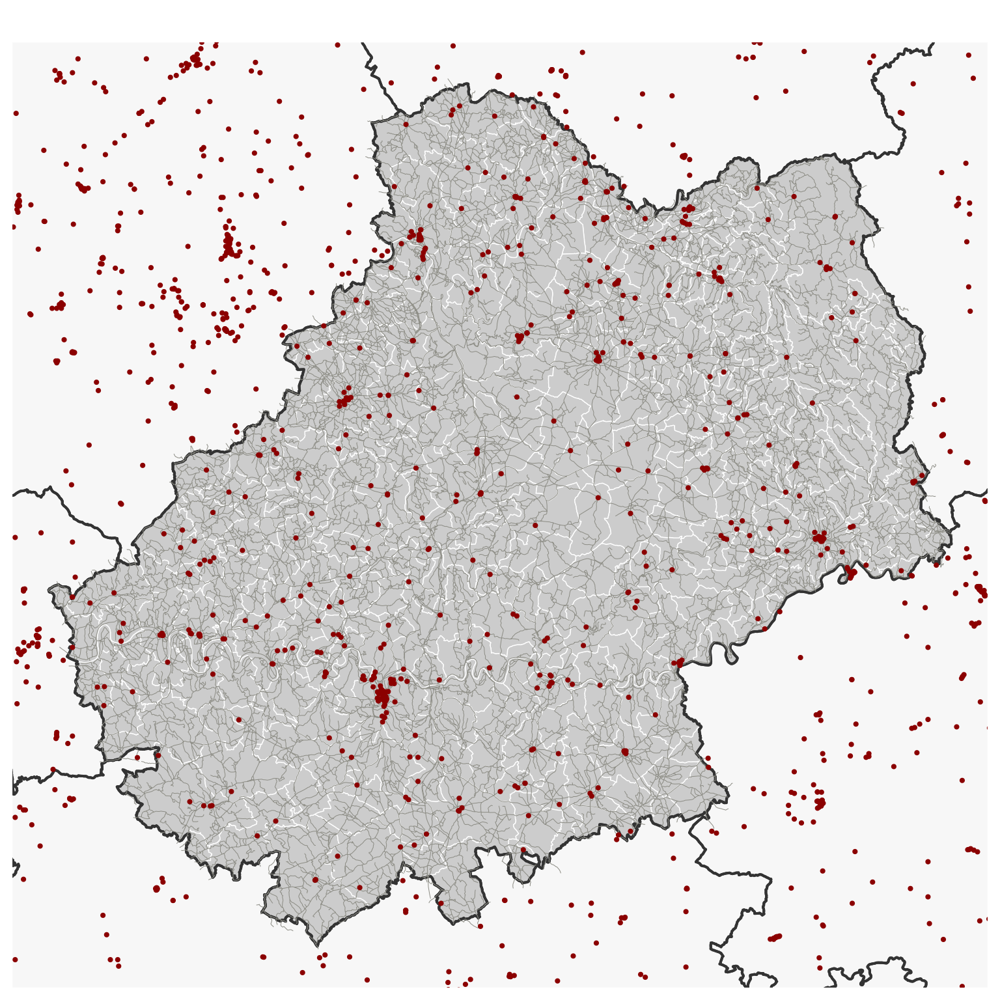
3.3 Carte de symboles proportionnels
Les cartes de symboles proportionnels sont utilisées pour représenter les variables de stocks (variables quantitatives absolues, la somme et la moyenne ont un sens). La fonction mf_map(..., type = "prop") propose cette représentation.
# Communes
mf_map(x = com)
# Symboles proportionnels
mf_map(
x = com,
var = "POPULATION",
type = "prop",
leg_title = "Population totale\n(2015)"
)
# Titre
mf_title("Distribution de la population dans le Lot")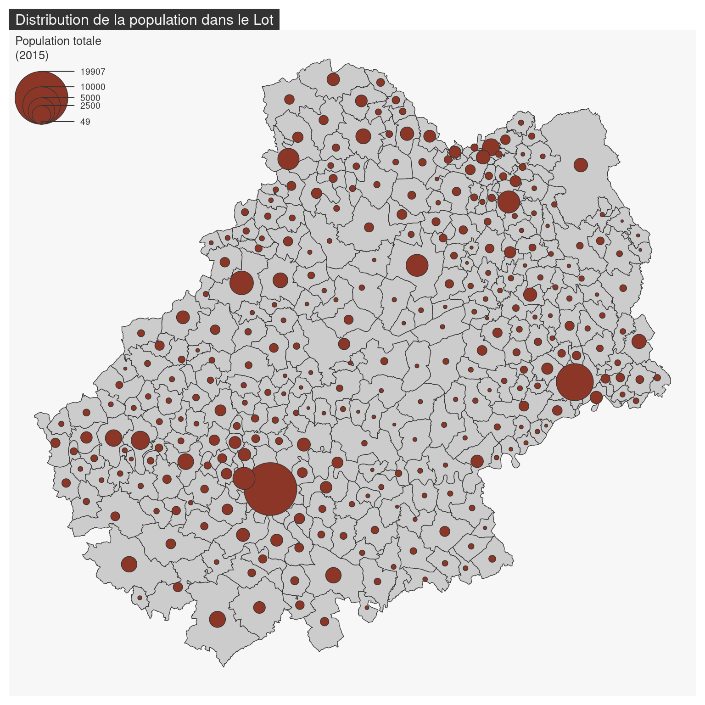
3.3.1 Comparer plusieurs cartes
Il est possible de fixer les dimensions du plus grand symbole correspondant à une certaine valeur avec les arguments inches et val_max. Nous pouvons ainsi construire des cartes en symboles proportionnels comparables.
# Afficher deux cartes en vis-à-vis
par(mfrow = c(1,2))
# Communes
mf_map(x = com, border = "grey90", lwd = .5)
# Population active occupée dans l'industrie, les hommes
mf_map(
x = com,
var = "IND_H",
type = "prop",
inches = .2,
val_max = 600,
leg_title = "Hommes",
leg_val_cex = .5,
)
# ajout d'un titre
mf_title("Population active occupée dans l'industrie")
# Communes
mf_map(x = com, border = "grey90", lwd = .5)
# Population active occupée dans l'industrie, les femmes
mf_map(
x = com,
var = "IND_F",
type = "prop",
inches = .2,
val_max = 600,
leg_title ="Femmes",
leg_val_cex = .5
)
# ajout d'un titre
mf_title("Population active occupée dans l'industrie")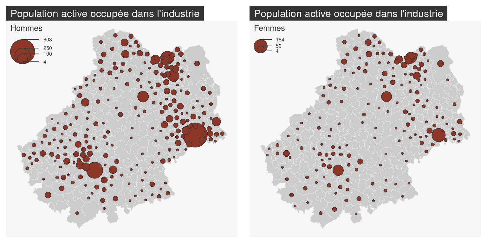
Nous avons ici affiché deux cartes en vis-à-vis, voir le point Afficher plusieurs cartes sur la même figure pour plus de détails.
3.4 Carte choroplèthe
Les cartes choroplèthes sont utilisées pour représenter les variables de ratios (variables quantitatives relatives, la moyenne a un sens, la somme n’a pas de sens).
Pour ce genre de représentation il faut au préalable :
- choisir une méthode de discrétisation pour transformer une série statistique continue en classes définies par des intervalles,
- choisir un nombre de classes,
- choisir une palette de couleurs.
La fonction mf_map(..., type = "choro") permet de créer des cartes choroplètes. Les arguments nbreaks et breaks servent à paramétrer les discrétisations, et la fonction mf_get_breaks() permet de travailler sur les discrétisations en dehors de la fonction mf_map(). De même, l’argument pal est utilisé pour renseigner une palette de couleur, mais plusieurs fonctions peuvent être utilisées pour paramétrer les palettes en dehors de la fonction (mf_get_pal…).
# Densité de population (hab./km2) en utilisant la fonction sf::st_area()
com$DENS <- 1e6 * com$POP / as.numeric(st_area(com))
mf_map(
x = com,
var = "DENS",
type = "choro",
breaks = "quantile",
pal = "Dark Mint",
lwd = 1,
leg_title = "Densité de population\n(habitants par km2)",
leg_val_rnd = 0
)
mf_title("Distribution de la population dans le Lot (2018)")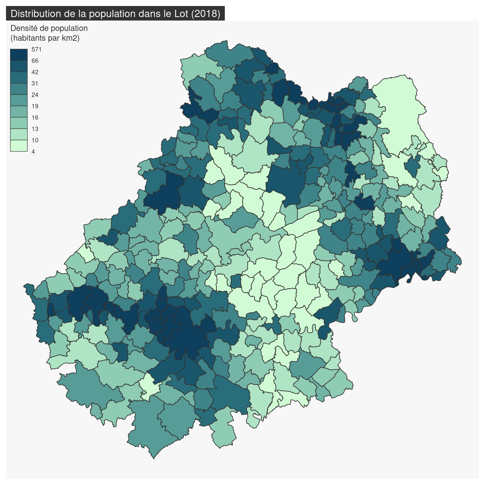
3.4.1 Discrétisations
La fonction mf_get_breaks() met à disposition les méthodes de discrétisations de variables classique : quantiles, moyenne/écart-type, amplitudes égales, moyennes emboîtées, Fisher-Jenks, géométrique …
com$POP_ACT <-
com$AGR_H + com$AGR_F +
com$IND_H + com$IND_F +
com$BTP_H + com$BTP_F +
com$TER_H + com$TER_F
com$SHARE_ACT <- 100 * com$POP_ACT / com$POPULATION
d1 <- mf_get_breaks(com$SHARE_ACT, nbreaks = 6, breaks = "equal", freq = T)
d2 <- mf_get_breaks(com$SHARE_ACT, nbreaks = 6, breaks = "quantile")
d3 <- mf_get_breaks(com$SHARE_ACT, nbreaks = 6, breaks = "geom")
d4 <- mf_get_breaks(com$SHARE_ACT, breaks = "msd", central = FALSE)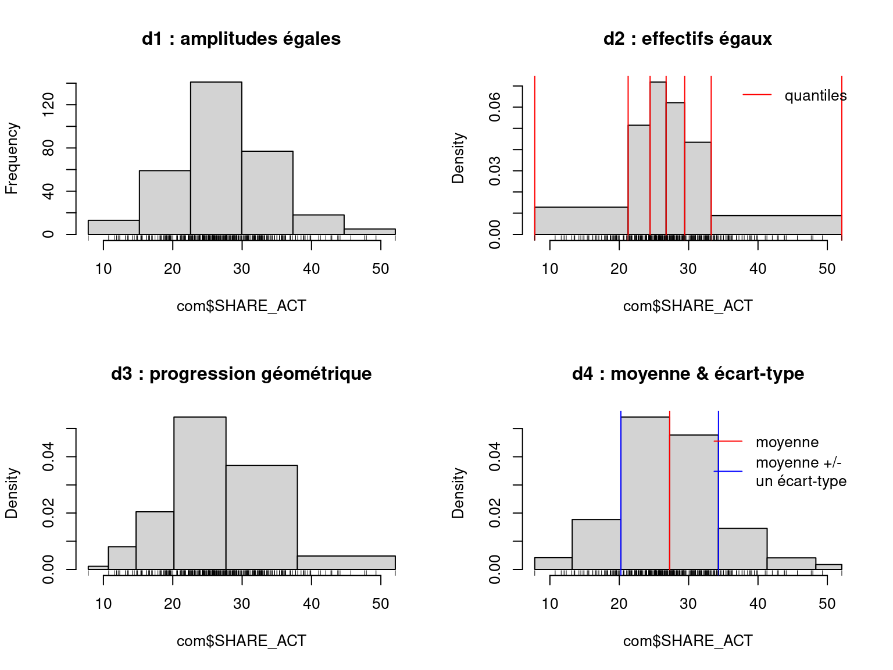
3.4.2 Palettes de couleurs
L’argument pal de mf_map() est dédié au choix d’une palette de couleur. Les palettes fournies par la fonction hcl.colors() peuvent être utilisées directement.
mf_map(x = com, var = "SHARE_ACT", type = "choro",
breaks = d4, pal = "Blues 3")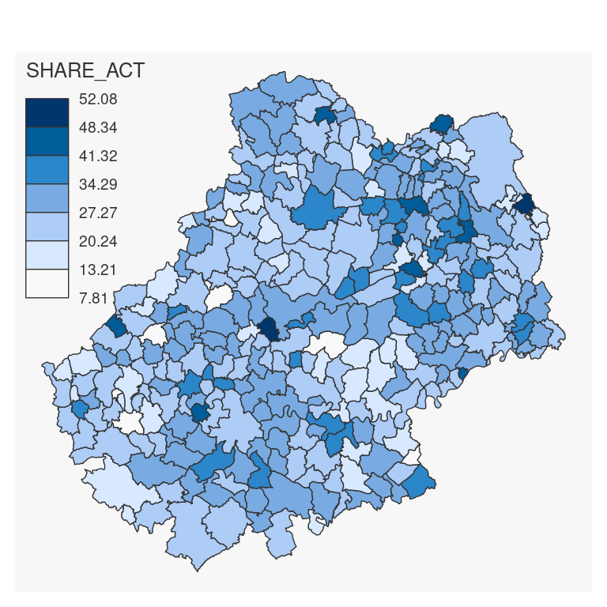

La fonction mf_get_pal() permet de construire une palette de couleur. Cette fonction est surtout utile pour créer des palettes divergentes asymétriques équilibrées.
mypal <- mf_get_pal(n = c(6,3), palette = c("Burg", "Teal"))
image(1:9, 1, as.matrix(1:9), col=mypal, xlab = "", ylab = "", xaxt = "n",
yaxt = "n",bty = "n")
3.4.3 Pour une couche de points
Il est possible d’utiliser ce mode de représentation en implémentation ponctuelle également.
com_c <- st_centroid(com)
mf_map(com)
mf_map(
x = com_c,
var = "DENS",
type = "choro",
breaks = "quantile",
nbreaks = 4,
pal = "Dark Mint",
pch = 24,
cex = 2,
border = "white",
lwd = .7,
leg_pos = "topleft",
leg_title = "Densité de population\n(habitants par km2)",
leg_val_rnd = 0,
add = TRUE
)
mf_title("Distribution de la population dans le Lot (2018)")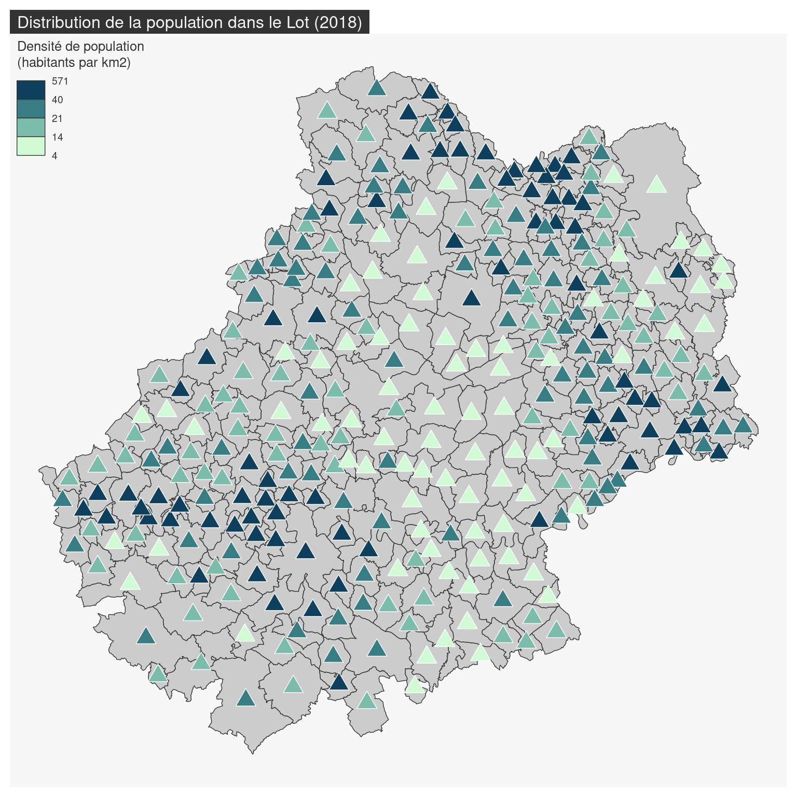
3.5 Carte de typologie
Les cartes de typologies sont utilisées pour représenter les variables qualitatives.
La fonction mf_map(..., type = "typo") propose cette représentation.
mf_map(
x = com,
var="STATUT",
type = "typo",
pal = c("aquamarine4", "yellow3","wheat"),
lwd = .7,
leg_title = ""
)
mf_title("Statut Administratif")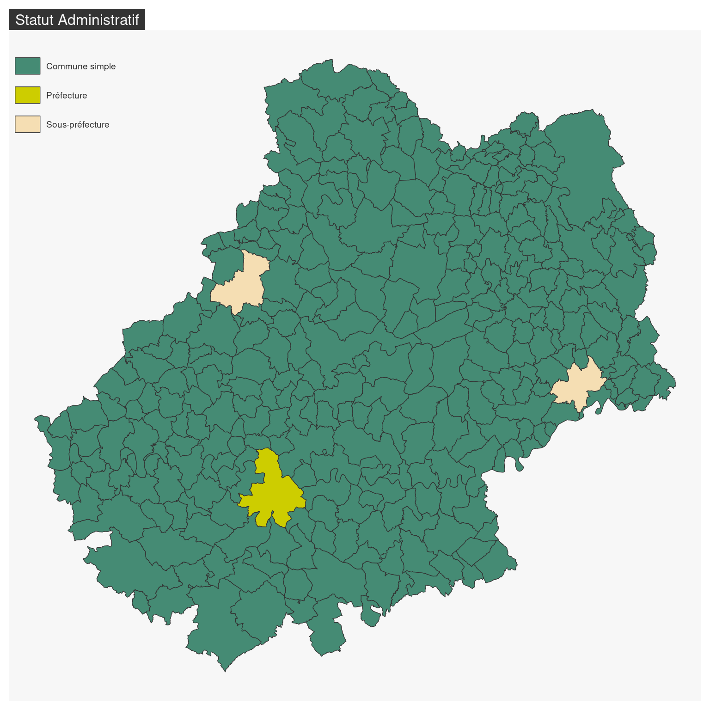
3.5.1 Ordonner les valeurs dans la légende
L’argument val_order sert à ordonner les modalités dans la légende.
mf_map(
x = com,
var="STATUT",
type = "typo",
pal = c("aquamarine4", "yellow3","wheat"),
val_order = c("Préfecture", "Sous-préfecture", "Commune simple"),
lwd = .7,
leg_title = ""
)
mf_title("Statut Administratif")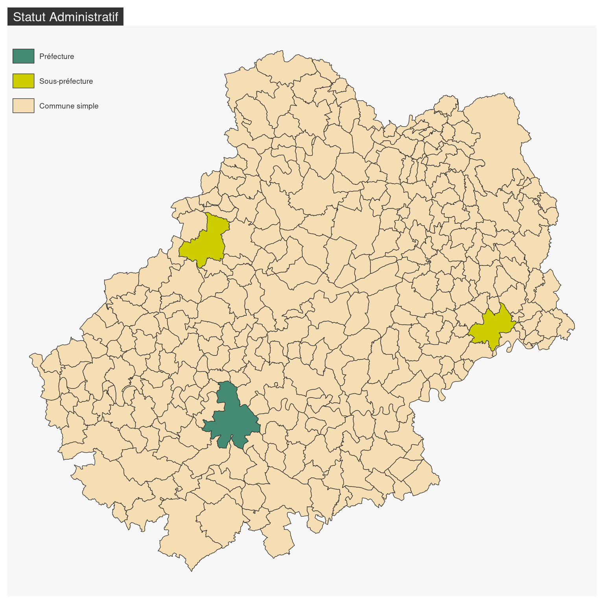
3.5.2 Les cartes de points
Quand l’implantation de la couche est ponctuelle, des symboles sont utilisés pour porter les couleurs de la typologie.
# extraction des centroides de la préfectures et des sous-préfectures
com_ctr <- st_centroid(com[com$STATUT != "Commune simple", ])
mf_map(com)
mf_map(
x = com_ctr,
var = "STATUT",
type = "typo",
cex = 3,
pch = 23,
pal = c("aquamarine4", "yellow3"),
leg_title = "",
add = TRUE
)
mf_title("Statut Administratif")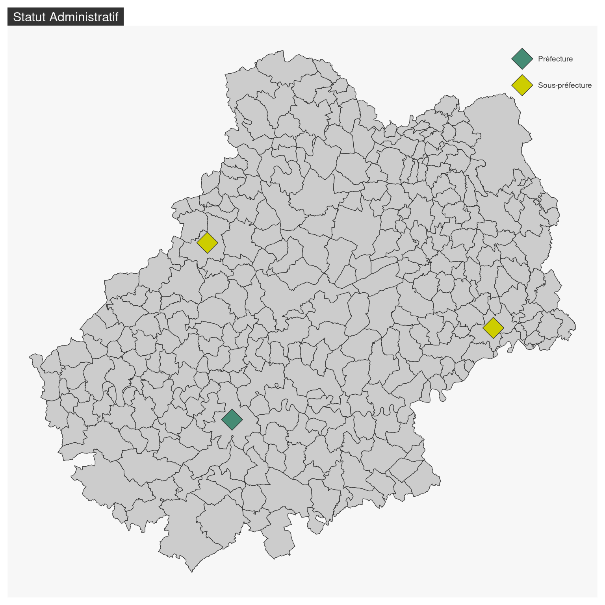
3.5.3 Les cartes de lignes
# Sélection des routes qui intersectent la commune de Cahors
cahors <- com[com$NOM_COM == "Cahors", ]
route_cahors <- route[st_intersects(x = route, y = cahors, sparse = FALSE), ]
mf_map(cahors)
mf_map(
x = route_cahors,
var = "VOCATION",
type = "typo",
lwd = 2,
pal = mf_get_pal(n = 4, "Dark 2"),
leg_title = "Type de route",
add = TRUE
)
mf_title("Statut Administratif")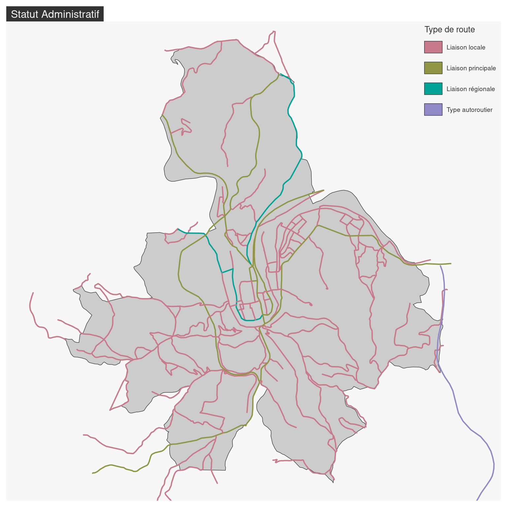
3.6 Carte de stocks et de ratios
La fonction mf_map(..., var = c("var1", "var2"), type = "prop_choro") représente des symboles proportionnels dont les surfaces sont proportionnelles aux valeurs d’une variable et dont la couleur repose sur la discrétisation d’une seconde variable. La fonction utilise les arguments des fonctions mf_map(..., type = "prop") et mf_map(..., type = "choro").
mf_map(x = com)
mf_map(
x = com,
var = c("POPULATION", "DENS"),
type = "prop_choro",
border = "grey50",
lwd = 1,
leg_pos = c("topright", "topleft"),
leg_title = c("Population", "Densité\nde population\n(en hab./km2)"),
breaks = "q6",
pal = "Magenta",
leg_val_rnd = c(0,1))
mf_title("Population")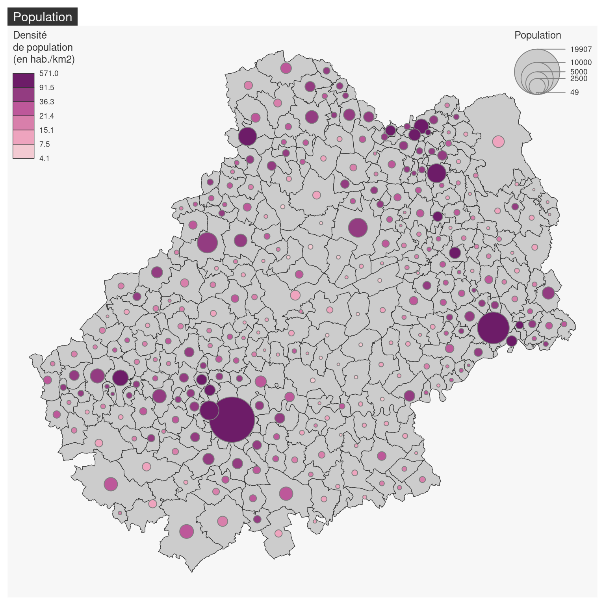
3.7 Carte de stocks et de catégories
La fonction mf_map(..., var = c("var1", "var2"), type = "prop_typo") représente des symboles proportionnels dont les surfaces sont proportionnelles aux valeurs d’une variable et dont la couleur représente les modalités d’une variable qualitative. La fonction utilise les arguments des fonctions mf_map(..., type = "prop") et mf_map(..., type = "typo").
mf_map(x = com)
mf_map(
x = com,
var = c("POPULATION", "STATUT"),
type = "prop_typo",
pal = c("aquamarine4", "yellow3","wheat"),
val_order = c("Préfecture", "Sous-préfecture", "Commune simple"),
leg_pos = c("bottomleft","topleft"),
leg_title = c("Population\n(2015)",
"Statut administratif"),
)
mf_title("Population")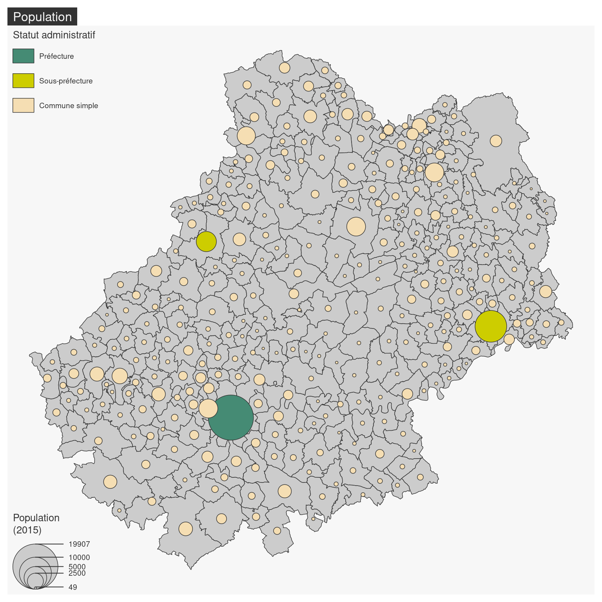